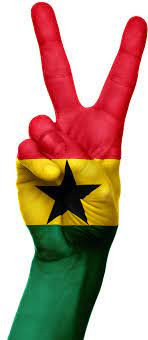

Enter your birth details to generate your Akan name:
What does yours mean?
Akan names are not just names given to children to give them identity. There is a specific traditional system that is followed when the naming is being done. The names also have different meanings and appellation.

| DAY | FEMALE | MALE | MEANING | ||
|---|---|---|---|---|---|
| MONDAY | Adwoa | Kudwo | These are names for children born on Monday. They like peace and will avoid trouble at all cost. Their appellation means “Peaceful”. | ||
| TUESDAY | Abenna | Kwabena | They were born on Tuesday. They are always friendly hence their appellation means “Friendliness”. | ||
| WEDNESDAY | Akua | Kwaku | They were born on Wednesday. Their appellations means “Evil”. They are mostly associated with stubbornness. | ||
| THURSDAY | Yaa | Yaw | They were born on Thursday. Their appellation is bravery. They never care about what will result from a certain situation. | ||
| FRIDAY | Afua | KOFI | They were born on Friday. They are known to be wanderers and are unable to stay in one place for long. They can travel to far places, start their own families there and never bother to check on those family members they left behind. | ||
| SATURDAY | Ama | Kwame | Born on Saturday. The males are believed to be always set for combat hence “Ready for combat” becomes his first appellation while “Snakebite herbalist” becomes his second appellation. Females are creators hence one of their appellation is “creation” while the other is “Grace”. | ||
| SUNDAY | Akosua | Kwasi | These names are given to children that are born on a Sunday. They are believed to be naturally agile and therefore their appellation is “Agility”. They are quick, fast and are highly skilled in performing tasks especially crafts. | ||